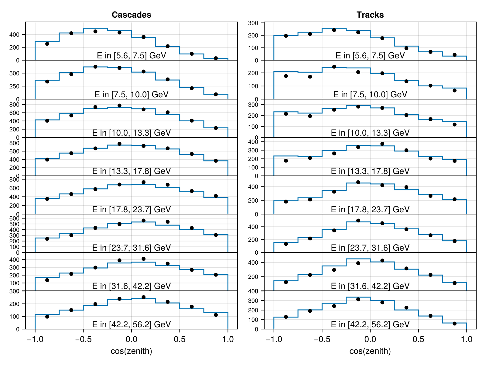
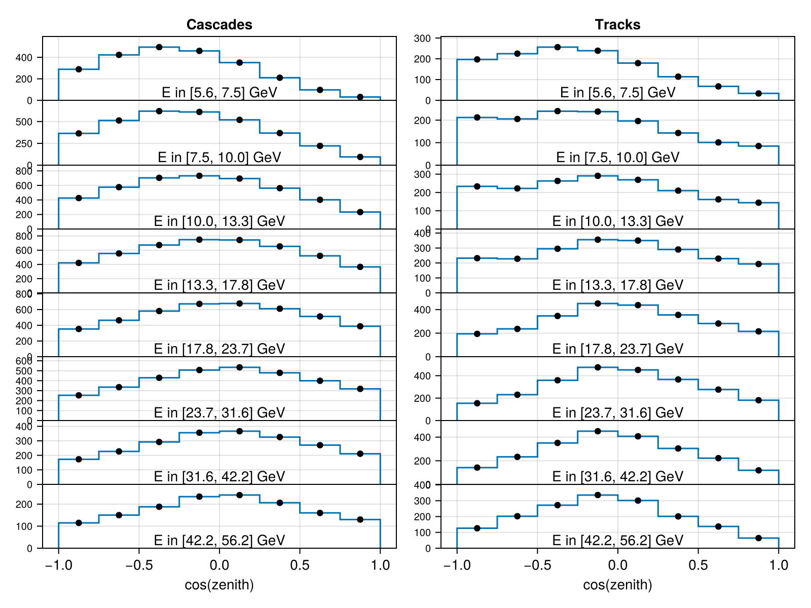

Configuring Experiments
This tutorial walks through the full experiment configuration workflow: from calling configure() to evaluating the likelihood and generating data. For the list of all available experiments, see Experiments. For physics module setup, see Physics Model Tutorial.
Configuring with Default Physics
Every experiment defines its own default_physics() internally, choosing the right oscillation model, flux, Earth density profile, and cross-section for its measurement. Calling configure() with no arguments uses these defaults — the simplest way to get started:
using Newtrinos
# Reactor experiment — default physics is vacuum oscillations only
dayabay = Newtrinos.dayabay.configure()
# Atmospheric experiment — default physics is SI matter effects + HKKM flux + PREM Earth
deepcore = Newtrinos.deepcore.configure()This is the recommended starting point. If you do not need to change the physics model (e.g. you are just evaluating the standard three-flavour likelihood), default physics is all you need.
Configuring with Custom Physics
To use a non-default oscillation model — inverted ordering, sterile neutrinos, NSI, etc. — assemble a physics NamedTuple and pass it to configure(). Each experiment extracts only the modules it needs; extra keys are silently ignored.
using Newtrinos
# Build a custom oscillation module (inverted ordering, matter effects)
osc_cfg = Newtrinos.osc.OscillationConfig(
flavour = Newtrinos.osc.ThreeFlavour(ordering = :IO),
interaction = Newtrinos.osc.SI(),
propagation = Newtrinos.osc.Basic(),
)
osc = Newtrinos.osc.configure(osc_cfg)
# Assemble the full physics NamedTuple
atm_flux = Newtrinos.atm_flux.configure()
earth_layers = Newtrinos.earth_layers.configure()
xsec = Newtrinos.xsec.configure()
physics = (; osc, atm_flux, earth_layers, xsec)
# Pass it to any experiment
deepcore = Newtrinos.deepcore.configure(physics)
# Reactor experiments only use osc — the extra modules are harmless
dayabay = Newtrinos.dayabay.configure(physics)You can reuse the same physics NamedTuple across multiple experiments. Each experiment picks up only the modules it needs, so sharing one physics object across a joint analysis is both correct and efficient.
Inspecting the Configured Experiment
configure() returns an experiment struct containing five fields you will commonly interact with:
exp = Newtrinos.deepcore.configure()
exp.physics # the physics modules that were passed in (or default_physics())
exp.params # experiment-specific nominal parameter values (detector systematics, etc.)
exp.priors # prior distributions for those parameters
exp.assets # read-only data: MC templates, observed event counts, etc.
exp.forward_model # Function: params -> distribution
exp.plot # Function: params -> CairoMakie FigureExperiment-specific parameters
Different experiments have different numbers of systematic parameters. Reactor experiments like Daya Bay have none — their only free parameters come from the oscillation physics:
dayabay = Newtrinos.dayabay.configure()
dayabay.params # (;) — empty NamedTuple
dayabay.priors # (;) — empty NamedTupleAtmospheric experiments like DeepCore have detector systematics that model ice properties, optical efficiency, and atmospheric muon contamination:
deepcore = Newtrinos.deepcore.configure()
deepcore.params
# (deepcore_aeff_scale = 1.0, deepcore_atm_muon_scale = 1.0,
# deepcore_ice_absorption = 1.0, deepcore_ice_scattering = 1.0,
# deepcore_opt_eff_overall = 1.0, deepcore_rel_eff_p0 = 0.1, ...)
deepcore.priors
# (deepcore_aeff_scale = Uniform(0.5, 2.0),
# deepcore_ice_absorption = Uniform(0.8, 1.2),
# deepcore_opt_eff_overall = Truncated(Normal(1.0, 0.1), 0.8, 1.2), ...)Merging all parameters
Use get_params and get_priors to obtain a single flat NamedTuple that merges the physics parameters with the experiment-specific parameters:
params = Newtrinos.get_params(deepcore)
# → (θ₁₂ = ..., θ₁₃ = ..., θ₂₃ = ..., δCP = ..., Δm²₂₁ = ..., Δm²₃₁ = ...,
# atm_flux_delta_spectral_index = ..., deepcore_aeff_scale = ..., ...)
priors = Newtrinos.get_priors(deepcore)This merged params is the full parameter vector expected by forward_model and all analysis functions.
Evaluating the Forward Model
forward_model(params) maps a parameter vector to a statistical distribution over the observed data space. For most experiments this is a ProductDistribution of independent Poisson distributions — one per histogram bin.
using DensityInterface, Statistics
exp = Newtrinos.deepcore.configure()
params = Newtrinos.get_params(exp)
# Evaluate the expected event distribution at the nominal parameters
dist = exp.forward_model(params)
# Expected event counts per bin (the Poisson means)
expected = mean(dist)
# Log-likelihood: how well does the model describe the observed data?
llh = logdensityof(dist, exp.assets.observed)The logdensityof call is the core of the likelihood evaluation. It computes $\log \mathcal{L}(\text{params} \mid \text{data})$ given the forward model prediction and the stored observed data.
Plotting Data vs Model
Each experiment provides a plot function that renders a comparison between the model prediction and the observed data. It requires a Makie backend to be loaded:
using CairoMakie
exp = Newtrinos.deepcore.configure()
params = Newtrinos.get_params(exp)
# Plot model at nominal parameters vs observed data
fig = exp.plot(params)
# Save to file
save("deepcore_comparison.png", fig)
# Plot model vs a custom data array (e.g. Asimov data)
asimov = Newtrinos.generate_asimov_data(exp, params)
fig_asimov = exp.plot(params, asimov)
Generating Asimov and Toy Data
Asimov data is the expected event count at the given parameter values — the Poisson mean of the forward model, rounded to the nearest integer. It is useful for sensitivity studies and bias tests where you want a "perfect" dataset with no statistical fluctuations.
Toy data is a single random draw from the forward model — a statistically fluctuated pseudo-experiment.
exp = Newtrinos.dayabay.configure()
params = Newtrinos.get_params(exp)
# Asimov data: the Poisson mean (no fluctuations)
asimov = Newtrinos.generate_asimov_data(exp, params)
# Toy data: one random pseudo-experiment
toy = Newtrinos.generate_toy_data(exp, params)
# Evaluate the likelihood on the toy dataset
dist = exp.forward_model(params)
logdensityof(dist, toy)JUNO and TAO have no observed data — their assets.observed field contains Asimov data generated at the nominal parameters. This is the standard approach for prospective sensitivity analyses of future experiments.
Combining Multiple Experiments
To build a joint likelihood across multiple experiments, collect them into a NamedTuple and pass it to the analysis functions:
experiments = (
deepcore = Newtrinos.deepcore.configure(physics),
dayabay = Newtrinos.dayabay.configure(physics),
kamland = Newtrinos.kamland.configure(physics),
)
# Merged parameter vector across all experiments and their physics
params = Newtrinos.get_params(experiments)
priors = Newtrinos.get_priors(experiments)
# Joint likelihood callable
likelihood = Newtrinos.generate_likelihood(experiments)
# Evaluate at nominal parameters
using DensityInterface
logdensityof(likelihood, params)The joint likelihood is the sum of the individual likelihoods. Shared oscillation parameters (e.g. θ₂₃) appear only once in params, since safe_merge ensures no parameter name is duplicated across experiments or physics modules.
For running scans and profile likelihoods over this joint likelihood, see the Analysis API Reference.